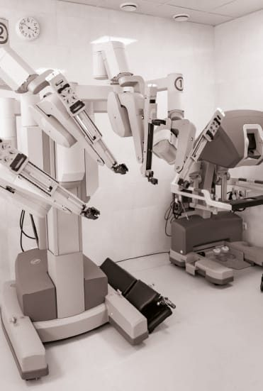

O que há de mais avançado na medicina, unindo precisão milimétrica e mínimo impacto no corpo do paciente.
A cirurgia robótica é um procedimento minimamente invasivo, realizado com o auxílio de um sistema robótico que amplia os movimentos do cirurgião.
Com braços robóticos e visão em alta definição, nossos especialistas operam com precisão milimétrica e menor impacto no corpo do paciente — acessando áreas delicadas com máxima segurança e eficácia.

Sistema cirúrgico robóticoPor ser minimamente invasiva, o trauma cirúrgico é significativamente menor.
Retorno mais ágil às atividades diárias e menor tempo de internação.
Maior precisão significa menos sangramento e menores chances de infecção.
Incisões pequenas garantem um melhor resultado estético.
A tecnologia robótica permite movimentos precisos e maior controle.
Mais segurança e eficácia mesmo em procedimentos complexos.
A tecnologia robótica é indicada para diversas condições urológicas, realizadas de forma menos invasiva e com o menor impacto possível.
Inclui prostatectomia radical robótica, nefrectomia parcial robótica e cistectomia radical robótica, entre outros procedimentos.
Na UroClínica Rio, a plataforma robótica é aplicada aos principais procedimentos da urologia oncológica e reconstrutora, sempre com indicação individualizada e baseada em evidências. Conheça os procedimentos mais realizados pela nossa equipe, disponíveis para pacientes de toda a cidade do Rio de Janeiro, com avaliação na Barra da Tijuca e em Bonsucesso.
Remoção da próstata no tratamento do câncer de próstata localizado. A visão ampliada e os instrumentos articulados favorecem a preservação dos feixes nervosos e do controle urinário, buscando o melhor equilíbrio entre resultado oncológico e qualidade de vida.
Retirada apenas do tumor renal, preservando o máximo de rim saudável no tratamento do câncer de rim. A precisão robótica permite reconstruir o órgão com segurança, mantendo a função renal sempre que possível.
Tratamento cirúrgico dos tumores de bexiga mais avançados, com remoção da bexiga e reconstrução do trânsito urinário. A abordagem minimamente invasiva reduz o trauma cirúrgico e favorece a recuperação.
Correção da estreitamento da junção ureteropiélica e outras reconstruções do trato urinário, com suturas delicadas realizadas com precisão milimétrica pelo sistema robótico.
Remoção de tumores da glândula adrenal (suprarrenal) por via minimamente invasiva, com dissecção segura em uma região anatômica delicada e de difícil acesso.
Todos os procedimentos são planejados caso a caso, com exames de imagem e discussão da melhor estratégia — priorizando segurança, resultado oncológico e recuperação do paciente.
A indicação da cirurgia robótica depende da avaliação clínica individual. Nem todos os casos têm indicação para a técnica robótica — por isso, a decisão é sempre compartilhada entre o paciente e o urologista, considerando o tipo e o estágio da doença, o histórico de saúde e os objetivos do tratamento.
Consulta detalhada com nossos especialistas para avaliar o caso, os exames e a indicação mais adequada — sempre com base em evidências científicas.
Cirurgia minimamente invasiva, realizada com o sistema robótico em ambiente hospitalar de excelência, com máxima precisão e segurança.
Retorno mais rápido às atividades, com acompanhamento próximo da equipe em cada etapa da sua recuperação.
Unimos tecnologia de ponta a uma equipe com certificações internacionais e vasta experiência em procedimentos minimamente invasivos e robóticos.
É um procedimento minimamente invasivo realizado com o auxílio de um sistema robótico. Braços robóticos e visão em alta definição ampliam os movimentos do cirurgião, permitindo precisão milimétrica e menor impacto no corpo do paciente.
Câncer de próstata, câncer de rim, tumores na bexiga e reparações urológicas complexas, entre outras condições — com prostatectomia radical robótica, nefrectomia parcial robótica e cistectomia radical robótica.
Sim. Por ser minimamente invasiva, gera menos dor, menor risco de complicações, cicatrizes menores e recuperação mais rápida, com menos tempo de internação.
Na UroClínica Rio, com equipe de especialistas com certificações internacionais. Atendemos nas unidades da Barra da Tijuca e Bonsucesso.
Tire suas dúvidas sobre a cirurgia robótica e descubra o tratamento mais indicado para o seu caso.